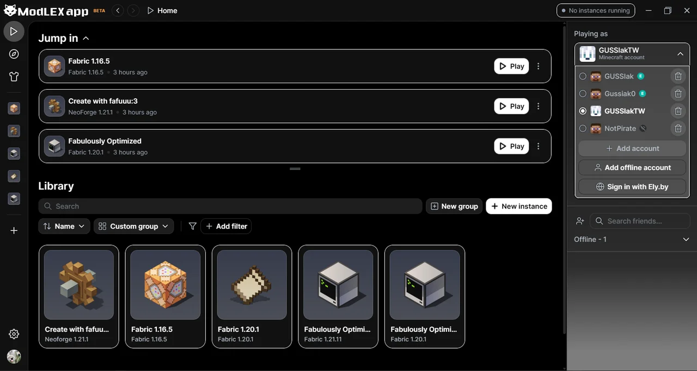
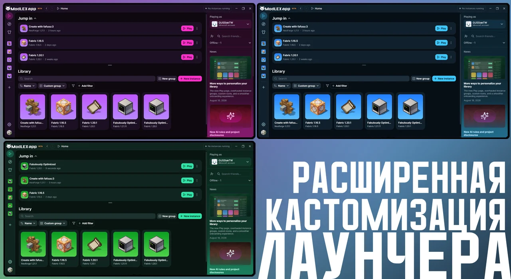
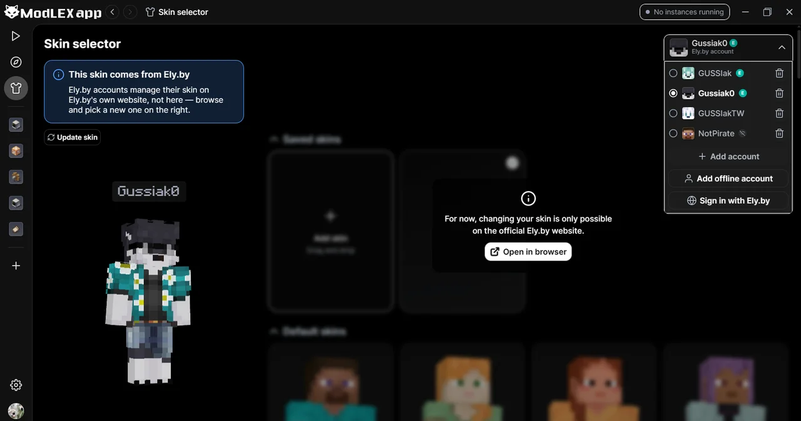

✦ By Alex | Gussiak
Форк Modrinth App с глубокой кастомизацией и своими интеграциями — открытый исходный код, бесплатно и без рекламы.
▄▄▄▄▄▄▄ █ ▄▄▄▄▄ █ █ █▀▀▀█ █ █ █▄▄▄█ █ █▄▄▄▄▄▄▄█
Полностью бесплатно, без рекламы и разовых или подписочных платежей

ModLEX сохраняет весь удобный функционал Modrinth App и добавляет то, чего в нём не хватало.
Свои цветовые схемы, фон, обводка текста и другие визуальные настройки — лаунчер подстраивается под вас, а не только под тему разработчика.
Настраиваемый статус в Discord — текст, отображаемые данные и поведение при простое можно менять под себя.
Сбор аналитики и отслеживание использования полностью вырезаны из форка. Лаунчер не следит за тем, что вы делаете.
Весь код открыт на GitHub, а лаунчер сейчас в открытой бете — можно следить за изменениями и предлагать свои.
Уже работает, но ещё дорабатывается — стоит знать, что впереди.
Установка модов и модпаков не только с Modrinth.
Помощник внутри лаунчера для диагностики крашей и подбора модов.
Одновременная игра сразу с нескольких аккаунтов на одной инстанции.
Как выглядит ModLEX в деле.


Да — весь код открыт на GitHub, любой может его проверить. ModLEX не собирает телеметрию и не запрашивает ничего, кроме обычного входа в аккаунт Minecraft/Ely.by, как и оригинальный Modrinth App.
Это форк с той же основой, но с добавленной глубокой кастомизацией внешнего вида, своим Discord Rich Presence и полностью убранной телеметрией. Со временем добавляются и более крупные вещи — см. раздел «В разработке».
Нет. Используется тот же вход, что и обычно — лицензионный аккаунт Microsoft/Minecraft либо Ely.by. ModLEX ничего не хранит от себя.
Сейчас доступна только сборка под Windows. Другие платформы не исключены в будущем, но пока не в приоритете.
Да, лаунчер сейчас в открытой бете — основной функционал стабилен, но встречаются шероховатости. Баги и пожелания можно присылать на Discord или через Issues на GitHub.
⏳ Загрузка релизов...
⏳ Загрузка новостей...
NAME
modlex — форк Modrinth App с открытым исходным кодом, без рекламы и телеметрии
SYNOPSIS
modlex [--offline] [--ely-by] [--curseforge (скоро)]
VERSION
Текущий релиз: v—, база Modrinth —. Статус: открытая бета.
DESCRIPTION
ModLEX сохраняет весь удобный функционал Modrinth App и добавляет то, чего в нём не хватало. Проект полностью открыт, бесплатен и не монетизируется рекламой — ни встроенной рекламы, ни разовых или подписочных платежей.
FEATURES
-c, --customization Свои цветовые схемы, фон, обводка текста и другие визуальные настройки — лаунчер подстраивается под вас.
-d, --discord-rpc Настраиваемый Discord Rich Presence — текст, данные и поведение при простое.
-t, --no-telemetry Сбор аналитики полностью вырезан из форка.
-o, --open-source Весь код открыт на GitHub, разработка ведётся публично.
ROADMAP
curseforge (скоро) Установка модов и модпаков не только с Modrinth.
ai-agent (скоро) Помощник внутри лаунчера для диагностики крашей и подбора модов.
multi-account (скоро) Одновременная игра сразу с нескольких аккаунтов на одной инстанции.
SCREENSHOTS
Библиотека и мультиаккаунт, кастомизация цветовых тем, скины и интеграция с Ely.by — см. раздел «Скриншоты» на обычной версии страницы.
DOWNLOAD
$ curl -LO https://github.com/GUSSIak/ModeLEX/releases/latest
Актуальная сборка — только Windows. Ссылка «Скачать» в шапке сайта ведёт на тот же релиз.
FAQ
Q: Безопасно ли это?
A: Да — весь код открыт на GitHub, любой может его проверить. Телеметрии нет, запрашивается только обычный вход в аккаунт Minecraft/Ely.by, как и в оригинальном Modrinth App.
Q: Чем ModLEX отличается от Modrinth App?
A: Та же основа, плюс глубокая кастомизация внешнего вида, свой Discord Rich Presence и полностью убранная телеметрия.
Q: Нужен ли отдельный аккаунт для ModLEX?
A: Нет. Используется тот же вход, что и обычно — лицензионный Microsoft/Minecraft либо Ely.by.
Q: На каких платформах это работает?
A: Сейчас доступна только сборка под Windows.
Q: Проект ещё в разработке?
A: Да, открытая бета — основной функционал стабилен, но встречаются шероховатости.
FILES
~/.modlex/config.json пользовательские настройки
~/.modlex/logs/*.log логи запуска
AUTHOR
Написано Alex (Gussiak).
SEE ALSO
discord(1), github(1), minecraft(6)
BUGS
Присылайте на GitHub Issues или в Discord — см. футер страницы.